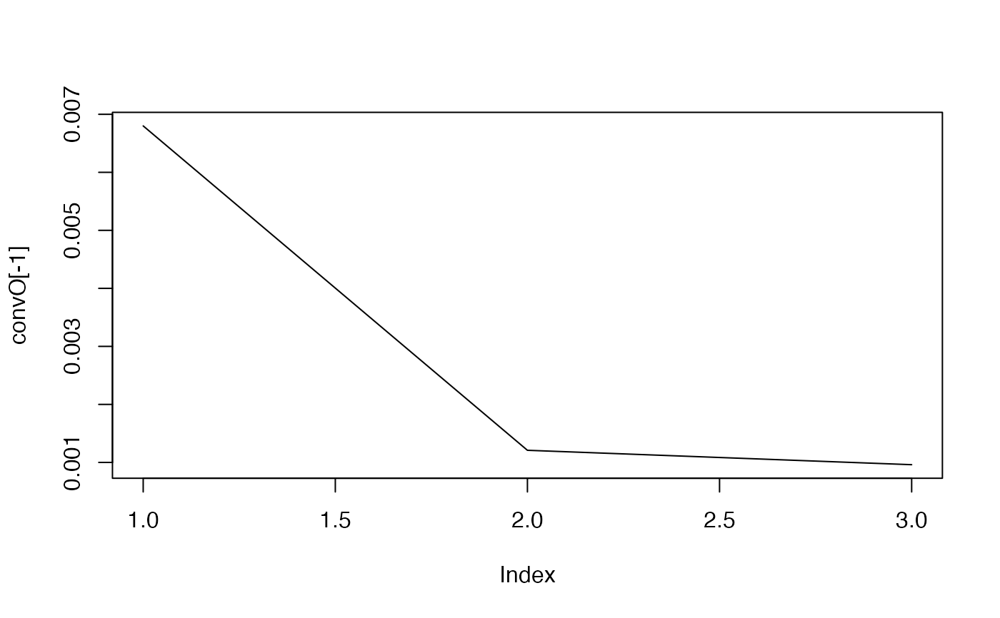
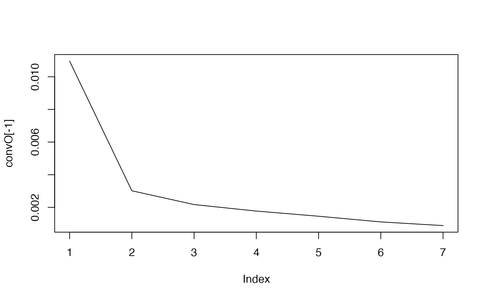
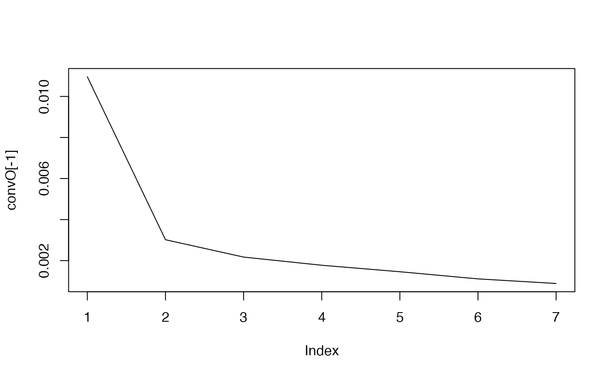

Reverse-engineer the network.
Usage
# S4 method for class 'micro_array'
inference(
M,
tour.max = 30,
g = function(x) {
1/x
},
conv = 0.001,
cv.subjects = TRUE,
nb.folds = NULL,
eps = 10^-5,
type.inf = "iterative"
)Arguments
- M
a micro_array object.
- tour.max
maximal number of steps. Defaults to `tour.max=30`
- g
the new solution is choosen as (the old solution + g(x) * the new solution)/(1+g(x)) where x is the number of steps. Defaults to `g=function(x) 1/x`
- conv
convergence criterion. Defaults to `conv=10e-3`
- cv.subjects
should the cross validation be done removing the subject one by one ? Defaults to `cv.subjects=TRUE`.
- nb.folds
Relevant only if cv.subjects is FALSE. The number of folds in cross validation. Defaults to `NULL`.
- eps
machine zero. Defaults to `10e-5`.
- type.inf
"iterative" or "noniterative" : should the algorithm be computed iteratively. Defaults to `"iterative"`.
References
Jung, N., Bertrand, F., Bahram, S., Vallat, L., and Maumy-Bertrand, M. (2014). Cascade: a R-package to study, predict and simulate the diffusion of a signal through a temporal gene network. Bioinformatics, btt705.
Vallat, L., Kemper, C. A., Jung, N., Maumy-Bertrand, M., Bertrand, F., Meyer, N., ... & Bahram, S. (2013). Reverse-engineering the genetic circuitry of a cancer cell with predicted intervention in chronic lymphocytic leukemia. Proceedings of the National Academy of Sciences, 110(2), 459-464.
Examples
# \donttest{
#With simulated data
data(M)
infM <- inference(M)
#> Loading required package: nnls
#> We are at step : 1
#> The convergence of the network is (L1 norm) : 0.0068
#> We are at step : 2
#> The convergence of the network is (L1 norm) : 0.00121
#> We are at step : 3
#> The convergence of the network is (L1 norm) : 0.00096

 str(infM)
#> Formal class 'network' [package "Cascade"] with 6 slots
#> ..@ network: num [1:100, 1:100] 0 0 0 0 0 0 0 0 0 0 ...
#> ..@ name : chr [1:100] "gene 1" "gene 2" "gene 3" "gene 4" ...
#> ..@ F : num [1:3, 1:3, 1:6] 1.0574 0.048 0.0588 0 1.0574 ...
#> ..@ convF : num [1:6, 1:4] 0.333 0.333 0.333 0.333 0.333 ...
#> .. ..- attr(*, "dimnames")=List of 2
#> .. .. ..$ : NULL
#> .. .. ..$ : chr [1:4] "convF" "cc" "cc" "cc"
#> ..@ convO : num [1:4] 5.36e+04 6.80e-03 1.21e-03 9.61e-04
#> ..@ time_pt: int [1:4] 1 2 3 4
#With selection of genes from GSE39411
data(Selection)
infSel <- inference(Selection)
#> We are at step : 1
#> The convergence of the network is (L1 norm) : 0.01096
#> We are at step : 2
#> The convergence of the network is (L1 norm) : 0.00302
#> We are at step : 3
#> The convergence of the network is (L1 norm) : 0.00217
#> We are at step : 4
#> The convergence of the network is (L1 norm) : 0.00177
#> We are at step : 5
#> The convergence of the network is (L1 norm) : 0.00146
#> We are at step : 6
#> The convergence of the network is (L1 norm) : 0.00111
#> We are at step : 7
#> The convergence of the network is (L1 norm) : 0.00089

str(infM)
#> Formal class 'network' [package "Cascade"] with 6 slots
#> ..@ network: num [1:100, 1:100] 0 0 0 0 0 0 0 0 0 0 ...
#> ..@ name : chr [1:100] "gene 1" "gene 2" "gene 3" "gene 4" ...
#> ..@ F : num [1:3, 1:3, 1:6] 1.0574 0.048 0.0588 0 1.0574 ...
#> ..@ convF : num [1:6, 1:4] 0.333 0.333 0.333 0.333 0.333 ...
#> .. ..- attr(*, "dimnames")=List of 2
#> .. .. ..$ : NULL
#> .. .. ..$ : chr [1:4] "convF" "cc" "cc" "cc"
#> ..@ convO : num [1:4] 5.36e+04 6.80e-03 1.21e-03 9.61e-04
#> ..@ time_pt: int [1:4] 1 2 3 4
#With selection of genes from GSE39411
data(Selection)
infSel <- inference(Selection)
#> We are at step : 1
#> The convergence of the network is (L1 norm) : 0.01096
#> We are at step : 2
#> The convergence of the network is (L1 norm) : 0.00302
#> We are at step : 3
#> The convergence of the network is (L1 norm) : 0.00217
#> We are at step : 4
#> The convergence of the network is (L1 norm) : 0.00177
#> We are at step : 5
#> The convergence of the network is (L1 norm) : 0.00146
#> We are at step : 6
#> The convergence of the network is (L1 norm) : 0.00111
#> We are at step : 7
#> The convergence of the network is (L1 norm) : 0.00089

 str(infSel)
#> Formal class 'network' [package "Cascade"] with 6 slots
#> ..@ network: num [1:74, 1:74] 0 0 0 0 0 0 0 0 0 0 ...
#> ..@ name : Named chr [1:74] "ID2-AS1" "CCDC40" "unknown" "LOC105379178" ...
#> .. ..- attr(*, "names")= chr [1:74] "236719_at" "1563563_at" NA "1556161_a_at" ...
#> ..@ F : num [1:3, 1:3, 1:6] 0.6089 0.0147 0 0 0.6089 ...
#> ..@ convF : num [1:6, 1:8] 0.333 0.333 0.333 0.333 0.333 ...
#> .. ..- attr(*, "dimnames")=List of 2
#> .. .. ..$ : NULL
#> .. .. ..$ : chr [1:8] "convF" "cc" "cc" "cc" ...
#> ..@ convO : num [1:8] 0.85033 0.01096 0.00302 0.00217 0.00177 ...
#> ..@ time_pt: num [1:4] 60 90 210 390
# }
str(infSel)
#> Formal class 'network' [package "Cascade"] with 6 slots
#> ..@ network: num [1:74, 1:74] 0 0 0 0 0 0 0 0 0 0 ...
#> ..@ name : Named chr [1:74] "ID2-AS1" "CCDC40" "unknown" "LOC105379178" ...
#> .. ..- attr(*, "names")= chr [1:74] "236719_at" "1563563_at" NA "1556161_a_at" ...
#> ..@ F : num [1:3, 1:3, 1:6] 0.6089 0.0147 0 0 0.6089 ...
#> ..@ convF : num [1:6, 1:8] 0.333 0.333 0.333 0.333 0.333 ...
#> .. ..- attr(*, "dimnames")=List of 2
#> .. .. ..$ : NULL
#> .. .. ..$ : chr [1:8] "convF" "cc" "cc" "cc" ...
#> ..@ convO : num [1:8] 0.85033 0.01096 0.00302 0.00217 0.00177 ...
#> ..@ time_pt: num [1:4] 60 90 210 390
# }